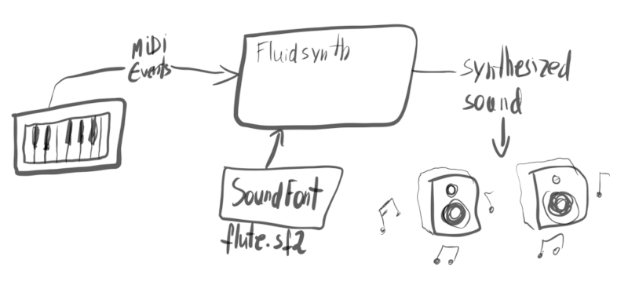
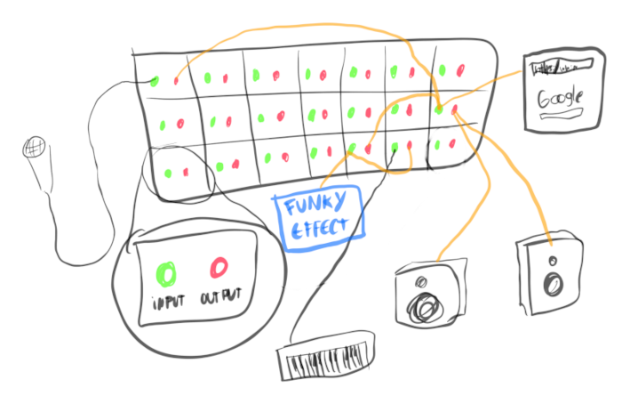
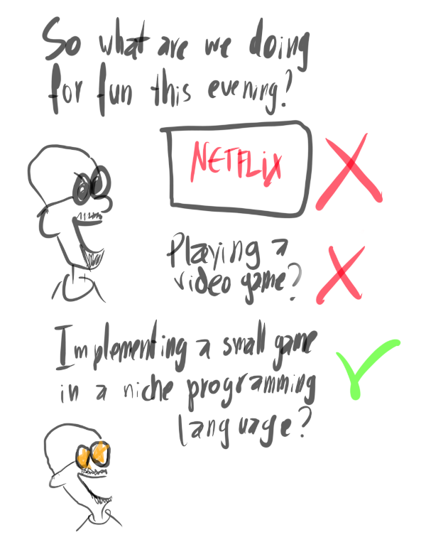
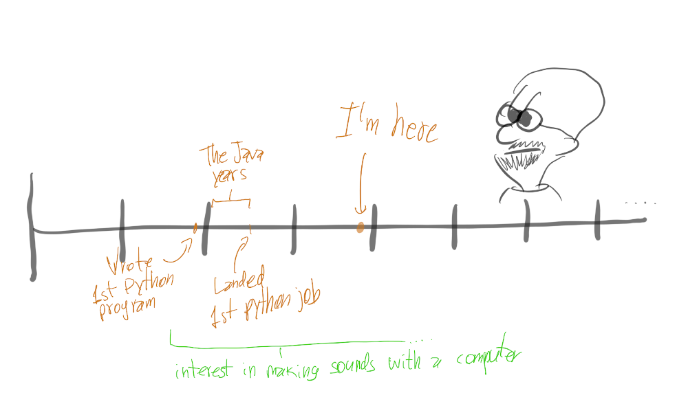

After many years of Python as my main programming language, I started learning Zig around the end of 2023. One of my goals was to tinker with audio programming, and I thought my life would be simpler if I could avoid C++. I'm now wondering if maybe I should learn C++ anyway... 🤔
What can I say, I get excited about programming languages!
Ever since I was in college, 20 years ago, I enjoy learning and exploring them.
My Zig learning journey
So the audio programming interest ended up being a good excuse to learn some Zig, and writing a bunch of blog posts about it in my TIL website.
Here are some things I learned with Zig:
1. The WAVE audio file format
- Crafting a WAVE audio file from scratch:
- Creating a WAVE file again, but this time using libsndfile
2. Using Fluidsynth programatically

Fluidsynth is a software that can read MIDI events (e.g. notes played on a keyboard) and then turn them into sound, based on information from a sound specification that tells Fluidsynth the properties of the sound and how to make it. The sound specification uses a format called SoundFont, typically files have a .sf2 extension.
Small example programs I made using Fluidsynth:
- a first example program which just plays 3 notes
- a dumb metronome with hardcoded BPM, to learn the Fluidsynth Sequencer API
- a program that logs MIDI events from any connected MIDI device, before sending them to the synthesizer to play them
- another sequencer example playing a hardcoded "song" with two tracks
3. The basics of using the JACK sound server programatically
If you make music on Linux, you will at some point meet JACK.
JACK is a sound server that lets you decide how exactly audio is routed in our computer system. It is super handy for people using the computer to make music, because it gives a lot of control to you and to the software that you use. For instance, you can apply effects to audio coming from the browser just the same as if it were coming from the microphone.
Like most people these days, I am actually using Pipewire instead of JACK, as it works better and it supports the exact same JACK APIs. So it's still useful to learn them, even if I'm not using JACK anymore.

With JACK or Pipewire, you can virtually configure how the audio signals are routed in your computer.
These are essentially Zig ports of example code from JACK's repo:
- a program that plays a single note sine wave to the output
- a program which plays a sine wave for the MIDI notes coming in the input -- aka: look ma, I am synthesizing sound! 😄
Other non-audio related stuff:
- simple command-line parsing without extra dependencies
- using a debugger to debug Zig programs
- creating a simple REPL calculator -- here are the related TIL posts:
All in all, a bunch of tiny programs as you can see. Nothing too daunting, plenty of good fun!
Resources that helped me to learn Zig
- of course, the official documentation, specially the overview and the language reference
- the Youtube videos by Dude The Builder helped me to understand some concepts that were hard for me to grasp from the documentation alone
- the ziggit.dev forum where people helped to troubleshoot my code and explained to me concepts that I was misunderstanding
- the Zig Guide, which complements the official documentation on some topics
- the Zig cookbook website which has some useful recipes
- towards the end of my learning journey, I discovered the Zig book, written by Pedro Faria (another Brazilian, yay! \o/), which I've read some chapters and found useful
Recap of Zig learning
I enjoyed learning Zig quite a bit!
What I love about Zig:
- super easy to call C APIs from it: you don't even need to create bindings, you can just call them directly
- great tooling and documentation for it
- great community
- its maintainer personality: Andrew Kelley is such a warm person!
- I get inspired whenever I watch any of his talks
What I find frustrating about Zig:
- every new release breaks most of my programs 😅
- hard to navigate and learn the standard library
In any case, it's a great programming language and I believe it will become super popular when it reaches 1.0 and becomes more stable. I think Andrew senses this and that's why he's being careful about getting things right before the 1.0.
Getting into Odin
At some point last year I got into Odin. I don't quite remember why, I think I got curious after reading some people talking about it on Hacker News, then I found Karl Zylinski's tutorials on Youtube teaching how to make games with it and that got me officially hooked!
Why do people like to learn new programming languages?
Because they want to feel cool doing cool stuff, that's why!
So that's how I got into Odin, by making games with Karl! He doesn't know me, but after spending so many hours with his online video presence, I feel like he's a friend I can refer to on a first-name basis. 😄
Some things I learned:
Making 2d games using Raylib

I had fun coding Snake and Breakout with Karl.
After that, I paired with a friend and we made TicTacToeToe. This is a variant of the Ultimate TicTacToe. My friend wanted to do Rust, so he wrote the game logic in Rust and I wrote the game UI in Odin using Raylib -- fun stuff!
More JACK audio stuff
I went on to translate several of the JACK examples into Odin:
- the same single-note sine wave aforementioned
- also the same sine wave synth playing MIDI notes from whatever input is connected to it
- a silly command-line sequencer that plays notes given as arguments
- a metronome with a configurable attack/decay
- a multithreaded program that records input and encodes it into a WAVE file
- This one was plenty of fun, cause I got to practice writing multithreaded code in Odin! 🤘
- The way this program works is: one thread gets samples from the input and writes them to a ring buffer, while a separate thread reads from the ring buffer and writes the sample to the disk as a WAVE file.
Creating a static site generator
As I was growing tired of issues with my website's setup every few months, I decided to replace it by a static site generator I'd write in Odin.
This took me two weeks, I got to learn quite a bit of Odin in the process and I'm very satisfied with it. Indeed, the article you are reading right now has been generated by my homegrown static site generator written in Odin, how cool is that?
The code is hacky, the template engine only supports the syntax used in my templates and it is not at all properly packaged to be shared, but it works for my needs and it's much faster than my previous setup! You can peek at the source here if you want to have an idea what it looks like.
Resources that helped me to learn Odin
- of course, the official documentation
- the aforementioned videos on making games from Karl Zylinski
- the Odin forum
- the Odin book written by Karl Zylinski
- this guy is a champion!
Recap of Odin learning journey
I also enjoyed very much learning Odin!
What I love about Odin:
- joy of programming vibes: many small usability features that make the code feel good and easier to reason about
- bindings to many high quality libraries included
- the implicit context system, with its allocator and temp_allocator
- it's done! The language is considered mostly finished, the efforts are now in improving the standard library
What I find frustrating about Odin:
- so few people using it... will it ever become popular? 🤔
Popularity is relevant because the more there are people using a language, the more tools it will have, more it will be tested, more opportunities will be created, etc.
I wonder if Odin is a language that people need to have suffered beforehand in order to appreciate it. Or maybe it will become more popular when there will be more tutorials and documentation freely available that are truly beginner-friendly.
Anyway...
Should I stop going around it and just learn some C++?
I've been thinking on what are my actual goals with all these.
It's been good fun learning these languages, and I don't regret it, but I can't help but think: is this the best use of my time?
Are Zig and Odin distractions on my way to building more meaningful programming skills, like audio programming with digital signal processing? Is learning languages fun to me because it's less daunting than aiming for more ambitious projects like learning how to implement audio effects and synths, which I've been meaning to?
Next year I'll be 40 years old, and I'm conscious that there is a limit to the number of programming languages I can still learn and be productive with, there is a limit to the amount of meaningful projects I can build. The more I get older, the more I have to choose wisely.
Of course, it's totally okay and not a bad thing to explore new languages for fun and all! I am just not sure I'm getting as much out of it as I would want to.

I knew I wanted to learn languages that would let me write more performant programs than the Python I've been using heavily over the last decade or so. For work stuff, I don't need to choose because my company has already chosen Go for the non-Python services, which is a sensible choice and I'm excited about doing some Go at work soon.
But for my personal journey, since C++ seems to be the industry standard for audio programming which is what I want to pursue in my "hobby programming", maybe I should just bite the bullet and dive into it.
Modern C++ seems to be much better than earlier versions, and it seems to keep getting better. Plus, there are several tools for interoperability with Python, it seems much better than Zig or Odin in this aspect.
So I think this year I'll be learning some C++. Just enough to be dangerous!
I also want to try to create some Reaper plugins with JSXF to explore more with audio plugins.
Let's see how it goes!